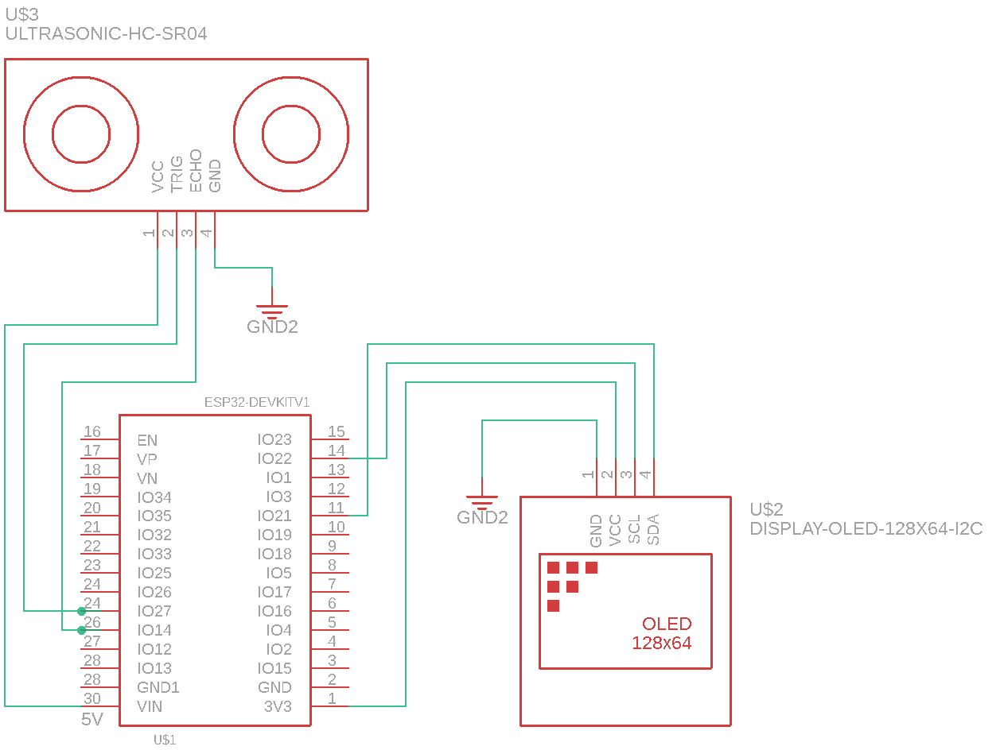

A simple circuit schematic.

// LED Display Libs
#include "SPI.h"
#include "Wire.h"
#include "stdio.h"
#include "Adafruit_GFX.h"
#include "Fonts/FreeSans9pt7b.h"
#include "Adafruit_SSD1306.h"
#define SCREEN_WIDTH 128 // OLED display width, in pixels
#define SCREEN_HEIGHT 64 // OLED display height, in pixels
// Declaration for an SSD1306 display connected to I2C (SDA, SCL pins)
#define OLED_RESET 4 // Reset pin # (or -1 if sharing Arduino reset pin)
#define OLED_ADDER 0x3C
Adafruit_SSD1306 display(SCREEN_WIDTH, SCREEN_HEIGHT);
// Ultrasonic Sensor Pins
#define ECHO_PIN 14
#define TRIG_PIN 27
// Speed of sound in cm is 0.0343 cm/ms
int v = 0.00343;
void setup() {
Serial.begin(9600);
display.begin(SSD1306_SWITCHCAPVCC, OLED_ADDER);
pinMode(TRIG_PIN,OUTPUT);
pinMode(ECHO_PIN,INPUT_PULLUP);
}
void loop() {
// Trig sends a ping
digitalWrite(TRIG_PIN,LOW);
delayMicroseconds(2);
digitalWrite(TRIG_PIN, HIGH);
delayMicroseconds(10);
digitalWrite(TRIG_PIN,HIGH);
// The time it takes the ping to reflect on a surface
// and be picked up by the Echo
int duration = pulseIn(ECHO_PIN, HIGH);
// Simple v = d/t equation, with one constant.
int distance = (duration/2)*v;
if (distance != 0){
display.clearDisplay(); // Has to clear the display
display.setTextSize(1);
display.setTextColor(WHITE);
display.setFont(&FreeSans9pt7b);
display.setCursor(20,12);
display.println("Distance:");
display.setTextSize(2);
display.setFont(&FreeSans9pt7b);
display.setTextColor(WHITE);
display.setCursor(30,45);
display.println(distance);
display.display();
}
delay(500);
}